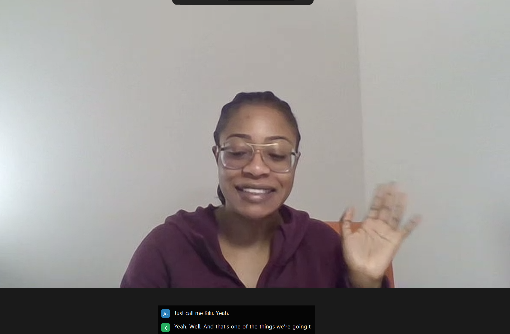
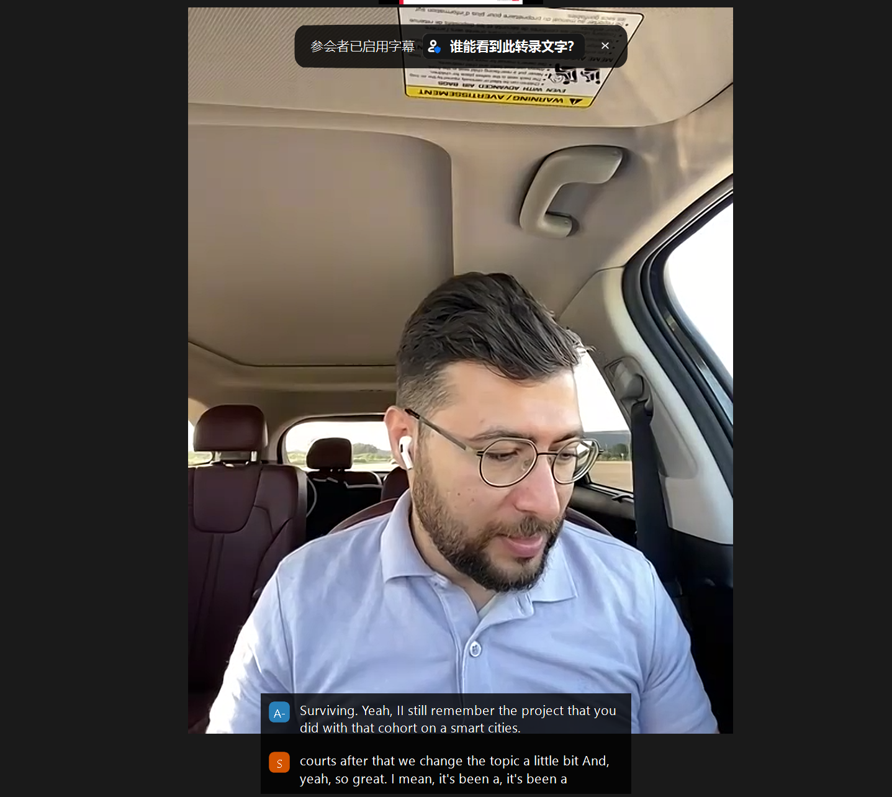
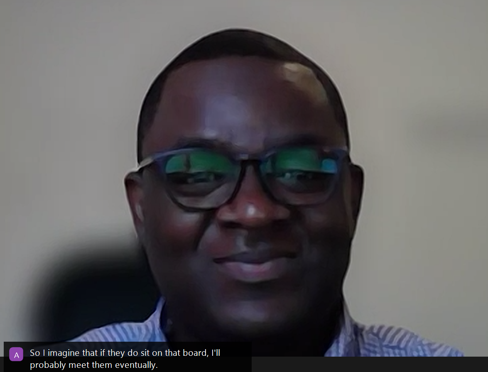
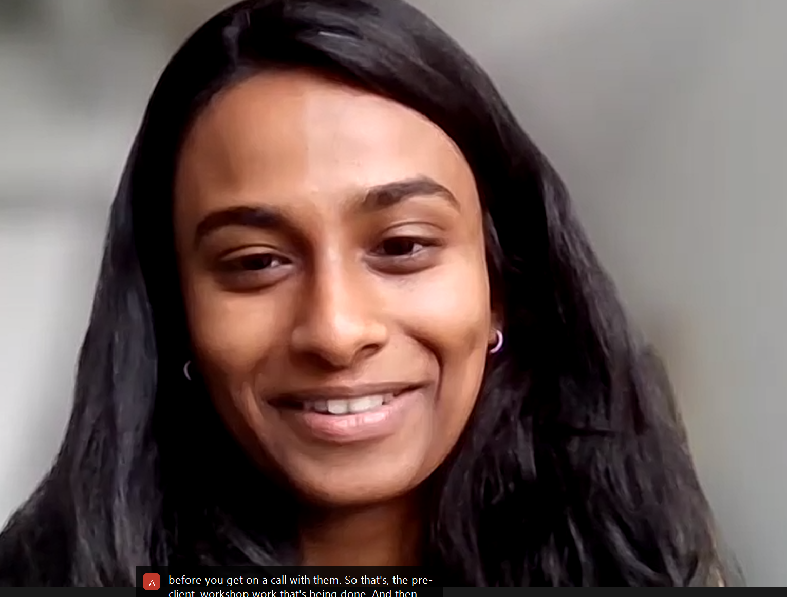

有影响力的沟通的嘉宾发言记录
第一期的嘉宾 kiki
嘉宾简介：
KiKe是 join Wealth Management Generalist Program at RBC
RBC 财富管理通才计划是一项独特的轮岗计划，旨在培养 RBC 财富和资产管理领域的未来领导者。该计划每年提供给精选数量的具有领导潜力和多才多艺思维的个人，并欢迎具有不同工作或教育背景的申请人，他们可以帮助RBC以不同的方式思考。理想的申请人是好奇、开放和创新的思想家，他们希望发展动态技能和广泛的经验，以加速他们在 RBC 的职业生涯。

有三种主要的沟通类型：口头沟通、非口头沟通和视觉沟通。
在工作场所沟通时，我们需要考虑接收者的角度，确保他们理解我们的意图。
自我认知对于有效沟通至关重要，需要了解自己想要传达的信息、目的以及高情商的运用。
加拿大礼仪在沟通中很重要，身体语言同样重要，人们会根据他人的行为来获取线索。在加拿大文化中，非语言沟通可以通过接受、握手、不看对方等方式进行。在遇到不确定的情况时，可以主动询问，特别是在加拿大这样的多元文化社会中。
不同文化对于眼神交流和身体语言有不同的解读，加拿大文化中，避免眼神交流可能被认为是不真诚或说谎。
加拿大文化重视平等主义，而日本文化则具有很高的不确定性规避。权力距离是指有权者和无权者之间的差距，可能存在于父母与子女、上级与下属之间。在加拿大文化中，孩子不允许质疑或反驳父母，而在其他文化中，孩子也不允许质疑或反驳父母。
在沟通前做好准备，有助于自信地表达自己的观点和目的。
语言差异是工作场所中最常见的误解之一。沟通是许多人（包括Kiki）在工作中挣扎的问题。加拿大和美国在工作文化上有所不同，加拿大更注重员工福利和健康。Covid-19对每个人的工作产生了影响，并且仍在持续。
灵活性是远程工作的优势之一，但也改变了我们的工作方式。建议写下自己的想法和语言，并练习积极倾听。注意在提问时的身体语言，不要害怕提问。
中国不是RBC全球资产管理公司支持远程工作的国家之一。RBC新任CEO希望人们知道他们为什么应该被考虑担任某个职位，并鼓励人们始终用5句话总结自己是谁以及做什么。
学习唯一的方法是提问，并且不要害怕提问。当有人给你知识时，它永远属于你。他们只能给你一次。了解加拿大最快的方法是与加拿大人交朋友。不要只和看起来像你、说话像你的人交朋友。你需要了解世界，通过了解你的朋友来了解世界。
第二期的嘉宾 Sasan
简介：
Sasan在加拿大PC公司担任参与经理，已经工作了5年，专注于业务转型项。普华永道[1]
Sasan 在加拿大PC公司与客户合作，确保有效沟通和及时交付。 相关原文: 4页 Sasan Burns在加拿大PC公司强调建立关系和维护关系的重要性，因为公司提供的服务高度依赖人员。

企业正在推动员工回到办公室工作，认为面对面工作有价值。
成为咨询顾问不需要有商业背景，很多有资格的人可以进入这些公司工作，需要具备良好的解决问题的能力和沟通技能。 相关原文: 12页 面试的关键在于建立人际关系，准备一份强有力的简历，展示实际经验中的技能。
在家作为咨询顾问工作时，如何解决沟通挑战？ 团队规模需要适中，以便进行有效的头脑风暴会议。
卢西安有多元化的研究背景，研究行业、客户及其运营中的差距。
背景研究和了解客户问题非常重要，以便向客户展示正确的结果或分析。
向客户展示结果需要大量的脑力，以便提出易于理解且适合其业务的方案。
Sasan认为加拿大的工程就业市场非常强劲，并且一直有需求。电气工程具有灵活性，可以向编程和计算机科学方向发展。 LinkedIn是一个非常好的资源，特别是当你不在那个地方时，Sasan说。
在社交活动中，关系的质量非常重要，同时每个人都应该尊重每个人的界限和任何限制，不能强迫或强加。
丰田在50或60年前引入了精益运营，以成为全球汽车制造商并获得大量市场份额。精益运营的目标是减少浪费的活动。—》丰田之路（The Toyota Way Fieldbook ）
上课给的link链接[萨桑·扎德 - 数字运营项目经理 |尤米 |零售与CPG - 普华永道 |LinkedIn]
第三期的嘉宾 Victor
嘉宾简介：
目前是在TD（多伦多道明银行工作的）[2]产品经理

沟通中的误解往往是由于信息传递不准确、表达不清或是双方理解不同导致的。为了避免沟通中的误解，可以采取以下几个方法：
- 清晰表达：在表达自己的观点或想法时，尽量使用简洁明了、准确无误的语言，避免使用含糊不清或容易引起误解的词汇。
- 倾听：认真倾听对方的观点，尽量理解对方的意思，不要急于表达自己的观点。在倾听过程中，可以适时用“嗯”、“哦”等语气词表示自己在认真倾听。
- 确认理解：在沟通过程中，适时向对方确认自己是否正确理解了他们的意思。可以使用“您是说……吗？”、“您能再解释一下……吗？”等语句来确认。
- 用自己的话复述：在理解对方的观点后，可以尝试用自己的话复述一遍，以确保自己的理解准确无误。
- 保持耐心：沟通中难免会出现误解，保持耐心，给双方留出足够的时间和空间来澄清误会。
- 了解文化差异：在跨文化沟通中，了解不同文化背景下的沟通习惯和表达方式，有助于减少误解的发生。
- 适时反馈：在沟通过程中，可以适时向对方提供反馈，表达自己对某个观点的看法，有助于确保双方的理解一致。
- 使用非语言沟通：除了语言沟通外，还可以通过肢体语言、面部表情、眼神交流等非语言方式来传递信息，有助于避免误解的产生。
- 沟通频率：保持适当的沟通频率，避免信息不对称导致的误解。
- 沟通环境：选择一个安静、舒适的沟通环境，有助于双方保持专注，降低误解的可能性。
面试是一个展示自己能力和专业素质的机会，所以在面试前做好充分的准备至关重要。以下是一些建议帮助你做好面试准备：
- 了解公司：在面试之前，了解应聘公司的基本信息、企业文化、业务范围等，以便在面试中展示你对公司的兴趣和了解。
- 研究岗位：仔细阅读招聘广告，了解职位要求，分析自己的技能和经验是否符合要求，并针对性地准备一些问题。
- 准备简历：确保简历内容准确、简洁、完整，针对应聘职位突出自己的优势和成就。
- 准备自我介绍：准备一个简短的自我介绍，突出自己的教育背景、工作经验、技能和兴趣等，以便在面试中自然地表达。
- 准备问题：准备一些关于公司、岗位、团队的问题，以展示你对公司的关注和对工作的热情。
- 着装得体：根据公司文化和职位要求，选择合适的着装，给面试官留下良好的第一印象。
- 练习面试技巧：了解一些面试技巧，如倾听、沟通、提问、回答等，并在实际面试中进行练习。
- 保持良好的心态：面试前保持积极、自信的心态，相信自己能够胜任这个职位。
- 提前到达：尽量提前到达面试地点，以便有充足的时间准备和调整状态。
- 注意礼仪：面试过程中要保持礼貌、尊重面试官，展示良好的职业素养。
虚拟面试：
- 准备：在面试或会议前，了解公司和职位信息，准备可能的问题和答案，以及展示自己的优势和价值。
- 倾听：在面试或会议中，认真倾听对方的问题和观点，以便更好地理解他们的需求和期望。
- 表达：清晰、简洁地表达自己的观点和想法，避免使用过于复杂的词汇和语言。
- 提问：在面试或会议中，提出有针对性的问题，以展示自己的专业素养和对话题的关注。
- 建立关系：在面试或会议中，展示自己的亲和力和合作精神，以建立良好的人际关系。
电梯推销是指在极短的时间内，向潜在客户清晰、简洁地介绍产品或服务，从而达到吸引对方注意力并激发兴趣的目的。电梯推销的目的是在有限的时间内迅速传达关键信息，同时展示产品或服务的优势，以便在竞争激烈的市场中脱颖而出。
电梯推销的核心原则包括：
- 简洁明了：表达要简洁，不要浪费客户的时间。
- 突出优势：强调产品或服务的独特卖点，吸引客户的兴趣。
- 目标明确：明确推销的目标，是获取客户信息还是促成交易。
- 适应场景：根据不同场景调整推销内容，如面对面交流、电话沟通等。
电梯推销是一种高效的沟通技巧，适用于销售、市场推广、产品介绍等场景。通过掌握电梯推销技巧，可以提高沟通效率，更好地与客户建立联系。
在面试中，要专注于为公司创造价值，避免问关于薪资和假期的问题。
提薪酬通常是在面试过程中，面试官主动询问求职者对薪酬的期望，但求职者主动提薪酬会让面试官觉得你只关心薪酬而忽视了公司的发展和工作的意义。此外，如果面试官认为你的能力和经验不足以匹配高薪，主动提薪酬会给面试官留下负面印象。所以，在面试过程中，最好不要主动提薪酬，而是在面试结束后，通过与公司沟通，了解公司的薪酬体系和岗位的薪酬范围，根据自己的能力和期望，给出一个合理的薪酬要求。
在面试后，还要感谢面试官花时间与你交流，并表现出对公司的热情。
在线存在是一种展示自己观点、想法和与观众互动的好机会。
产品经理的工作主要是与人沟通，确定战略和讨论如何实现想法。
第一印象很重要，但随着时间的推移，人们会逐渐了解你。
建立良好的第一印象和关系对于成功至关重要。
意识到自己不知道的事情，并努力去了解。
寻求高级职业人士的帮助，建立导师和赞助关系。
寻找能够为你代言的经理，并利用他们的社会资本。
沟通中的误解是常见的问题，需要避免。
沟通中的最大问题是人们认为已经进行了沟通，但实际上并没有。
知识不等于经验，银行招聘各种专业的人才。（比如有一位同学询问了作为艺术类专业，毕业工作做有什么建议嘛？嘉宾谈到，可以进银行，银行什么专业的学生都需要） 利用空闲时间进行学习和自我提升。 时间管理对于实现目标至关重要。
建立人际关系的技能可以应用于工作和学校。
尊重和沟通可以同时进行。
第四期嘉宾：Austin

Austin是KPMG[3]企业绩效管理（EPM）团队的一员，他在KPMG工作了两年多。
当KPMG的顾问需要学习使用不同的工具，如Excel、Tableau或Sql。
KPMG正在寻找明年冬天的实习生，不仅在加拿大，还包括美国。
肢体语言在虚拟环境和面对面环境中都很重要，关键在于你是否清楚地识别了问题。
KPMG有一个过程，即在会议前确定冠军，以帮助我们更好地准备会议。这个过程包括预客户工作坊、工作坊期间和后客户工作坊。
在虚拟环境中，有人需要将所有信息整合在一起，确保其可用，因为在虚拟环境中，如果人们连续参加会议，他们可能不会全神贯注。这就是预客户工作坊的工作。
你想让客户感到他们在参与，并对工作坊中发生的事情负责，通过给他们便签来实现这一点。呈现的方式是在电话会议中，这是你说过的话，这是我对你最初说的话的想法。
公司有负责危机的团队，他们会发送电子邮件告诉员工应该做什么。这是一般信息，你应该引用它。
CEO表示，你不必上学就能加入公司，发展核心技能是一个大转变，但发展你的核心技能，他说。个人素质在求职过程中非常重要，包括演讲能力和人际交往能力。
数据分析能力可以帮助筛选出有用的信息，避免陷入细节。
KPMG公司注重员工福利，如提供产假和陪产假，并注重员工的表现。 KPMG加拿大公司遵循一套规则和标准，但KPMG中国公司的情况需要进一步了解。
Chat GPT可以快速生成答案，为团队节省时间。 GPT认为应该将客户和团队成员视为一个团队，共同解决问题。在工作中管理人际关系的方法是首先提问以了解情况，然后与对方的上司沟通。关键是要坦诚地展示自己的日程安排，并理解事情为什么以某种方式完成或表达。通过提问以获得完整的画面，然后进行沟通，了解它如何影响你。
高级领导和我讨论了发生的事情。当时，我想挂断电话离开，但不幸的是，我不得不在那里再待半个小时。我认为关键是控制自己的情绪，控制自己，控制局面。
处理数据的两种方法：玩弄数字并组织自己，以及进行实际数据分析，研究哪些工具在客户和其他团队中更受欢迎。
公司内部有一个基于绩效的评估系统，每个员工都会与其他员工进行比较。但这并不总是最好的。
我总是喜欢新的挑战，喜欢学习新东西。因为我能够围绕某个主题（如运营）掌握一些东西，但我对深入细节并连续多年工作没有兴趣。 我甚至不知道KPMG的EPM。我只是说，我喜欢看预算和支出。然后我了解了更多关于EPM的信息，他们日常工作做什么。
我在科学领域，我们专注于细节和埋头苦干。去商学院，我讨厌网络，讨厌演讲，讨厌在观众面前说话。这不是科学家或教授。但我坚持下来，并找到了支持系统。
花时间找出你的2到3个顶级技能，专注于你的个人品牌和电梯演讲，并走出你的舒适区。我们与Cynthia和Jen合作。也许对你有用？请随时在LinkedIn上联系我。
回答问题
好的，谢谢。是的，这很难，但是，有一种方法可以解决任何问题，了解问题是什么，问题是什么。他们试图实现什么，对吧？有时，当我喜欢浏览成千上万的数据集时。实际上，我把它写在一张纸条上，然后把它贴在我的笔记本电脑上，这样我就可以专注于此。
不要迷失在细节中。然后是关于，你知道，你的数据分析方法，比如，一切都有设计。
这不仅仅是为了解决问题。首先，你需要明白，你知道，他们为什么要收集这些信息？
他们将这些不同类型的信息用于这些不同的数据点是什么？然后，这涉及到与客户合作以获取这些信息。
然后你就有了一种方法来分析这些数据，然后开始执行它。
所以。在数据分析方面，也有很多关于如何进行的思考，而不仅仅是深入研究数据并将其公布出来。
有些人会这样做，这是一个对他们有效的过程。但就我个人而言，当我尝试这样做时，我往往会迷失在数据中，我无法专注于它是什么并进行定义，因为客户只会给你一个数据转储，对吧？
他们什么都不做。所以这对我有帮助。
总结
课程结束了。最后老师给我的评语是：你来上课，你多试了一点，你说话，你在聊天中打字，你的英语越来越强。
- 普华永道在全球152个国家或地区有分支机构，其中包括中国大陆、香港特别行政区和澳门特别行政区。是一家会计师事务所公司，也是世界上最顶级的会计师事务所之一，是国际四大会计师事务所之一1。它的前身是普华会计师事务所和永道会计师事务所，于1998年在英国合并成为现在的普华永道。普华永道的企业使命是建立社会信任和解决重要问题，它为客户提供专业服务，包括审计、税务、咨询等，涵盖多个行业和领域45。它在全球拥有近328,000名专业人员，遍布152个国家或地区。普华永道的企业使命是建立社会信任和解决重要问题，它为客户提供专业服务，包括审计、税务、咨询等，涵盖多个行业和领域45。它在全球拥有近328,000名专业人员，遍布152个国家或地区。 ↩
- TD bank的产品经理是负责开发和管理TD bank的各种金融产品和服务的人员，他们需要具备金融知识、市场分析、项目管理和沟通协调等能力。 ↩
- 毕马威（KPMG）是一家国际性的专业服务机构，主要提供审计、税务和咨询等服务。它是世界四大会计师事务所之.与普华永道德勤和安永并列.毕马威的名称来源于其四位创始人的英文缩写Klynveld、Peat、Marwick和Goerdeler。 ↩